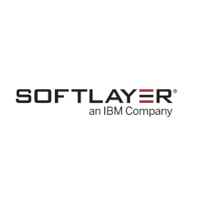
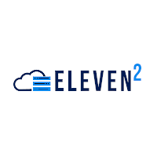

Professional Summary
Results-driven IT professional with over 15 years of progressive experience in systems engineering, DevOps, and infrastructure management. Proven track record of delivering enterprise-scale solutions that enhance operational efficiency, strengthen security posture, and reduce costs. Expert in designing and implementing hybrid cloud architectures, virtualization strategies, and automated deployment pipelines. Demonstrated success leading cross-functional teams, managing complex IT projects, and establishing best practices for enterprise infrastructure operations.
Core Competencies
Infrastructure & Systems
- Enterprise Systems Administration
- Virtualization & Cloud Architecture
- Network Design & Security
- High Availability & Disaster Recovery
- Performance Optimization & Monitoring
- Microservices Architecture
DevOps & Automation
- CI/CD Pipeline Development
- Infrastructure as Code (IaC)
- Configuration Management
- Container Orchestration
- Automated Testing & Deployment
- Site Reliability Engineering (SRE)
Leadership & Strategy
- Technical Team Leadership
- Project Management & Planning
- Vendor Relations & Negotiation
- Process Improvement & Documentation
- Strategic Technology Planning
- Client Relationship Management
Professional Experience
Senior Systems Engineer
Independent Consulting
2020 - Present
- Lead enterprise infrastructure projects for multiple clients, delivering scalable solutions that improve operational efficiency by 25-40%
- Design and implement hybrid cloud architectures integrating on-premise infrastructure with AWS, IBM Cloud, and Google Cloud Platform
- Develop automated deployment pipelines using Jenkins, Travis CI, and Ansible, reducing deployment time by 60%
- Establish comprehensive monitoring and alerting systems using Prometheus, Grafana, and ELK stack for proactive issue resolution

Advanced Customer Support Engineer
SoftLayer (IBM Cloud)
2015 - 2016
- Provided advanced issue support to enterprise clients for SoftLayer/IBM Cloud infrastructure serving global clients across 30+ data centers worldwide
- Managed and configured complex networking infrastructure including switches, LACP/EtherChannel, VLAN trunking, and load balancers
- Troubleshot advanced issues with Vyatta firewalls, CDN systems, VMware vCenter virtualization platforms, Linux servers, Windows clusters, and MS SQL
- Served as an escalation point for vendor relationships with Citrix, VMware, SendGrid, Brocade, and Fortinet
Systems Security Analyst
Alert Logic
2014
- Conducted comprehensive security audits and compliance assessments for PCI DSS, HIPAA, GLBA, and SOX requirements
- Analyzed system logs and network traffic to detect and respond to security threats in real-time
- Created reports to identify network anomalies and analyze traffic patterns, and reduce network chatter
- Collaborated with security teams proactively to mitigate detected threats from security alerts and monitoring systems
Operations & Technical Assistant
Austin Exploration, Inc.
2012 - 2013
- Standardized and automated deployment practices for data acquisition hardware and software for new projects
- Established standardized deployment practices and automated provisioning for new project environments
- Supported geophysical operations including calibration and testing of specialized gravity and magnetics equipment, and data acquisition systems

CTO / Chief Technology Officer
Eleven2
2009
- Led strategic technology initiatives and infrastructure planning for web hosting company managing 200+ with around 8000 IP addresses
- Designed and implemented Nagios monitoring system performing 200,000+ health checks every 5 minutes
- Developed custom SNMP monitoring solutions using Bash and Perl for comprehensive infrastructure visibility
- Integrated billing platform with help desk software, streamlining customer service operations
Network Administrator
Idera / BBS Technologies
2008 - 2009
- Configured and installed Dell/Cisco/Foundry routers, switches, and load balancers for new locations and production environments
- Performed maintenance on hybrid Nortel/Hosted Asterisk VoIP and PBX phone system infrastructure
- Aided in management of Windows & Linux servers for production, development, and QA environments including vCenter and ESX servers
- Monitored deployments in the datacenter, onsite and across remote locations
Technical Skills
Operating Systems & Platforms
- Linux (Debian, Red Hat, Ubuntu, CentOS, Gentoo)
- Windows Server & Desktop
- VMware ESX/vSphere/vCenter
- FreeBSD & macOS
- Container Platforms (Docker, LXC, LXD)
- Serverless Computing (AWS Lambda, Google Cloud Functions)
Networking & Security
- Cisco IOS & NX-OS
- Juniper SRX & EX
- Firewall Management (Checkpoint, Fortinet, SonicWall, Vyatta)
- Load Balancing & CDN
- VPN & Remote Access
- Network Monitoring & Analysis
Programming & Automation
- Java & Kotlin
- C# & .NET
- Python & Perl
- Bash & PowerShell Scripting
- SQL & Database Management
- API Development & Integration
Configuration Management & Deployment
- Ansible & Bash & Python Scripting
- System Deployment (Kickstart, debconf, SCCM)
- NETCONF/YANG Configuration Management
Cloud & DevOps Tools
- AWS, Google Cloud, IBM Cloud
- Jenkins, GitHub Actions & Travis CI
- Git & Version Control
- Terraform
Monitoring & Observability
- Nagios & Prometheus
- Grafana Dashboards
- ELK Stack (Elasticsearch, Logstash, Kibana)
- SNMP Monitoring
- Performance Metrics & Alerting
Education
Information Technology Studies (Expected completion: May 2026)
Houston Community College, North Harris College
1999 - 2003, 2024 - Present
Completed coursework in computer science, networking, and systems administration. Currently completing final courses.
Certifications & Training
Transportation Worker Identification Credential (TWIC)
Transportation Security Administration (TSA)
2012 - 2017
Basic Offshore Safety Induction & Emergency Training (BOSIET)
OPITO
2013 - 2016
Apprentice Electrician License
Texas Department of Licensing and Regulation
2015 - 2019